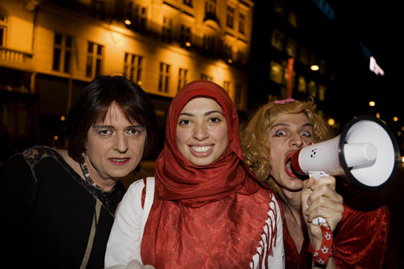
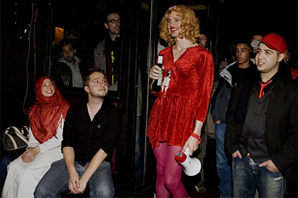
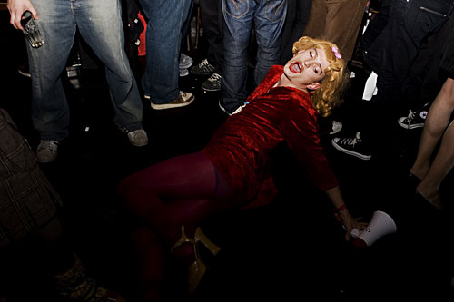
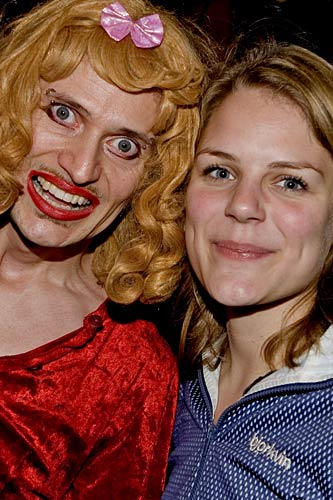
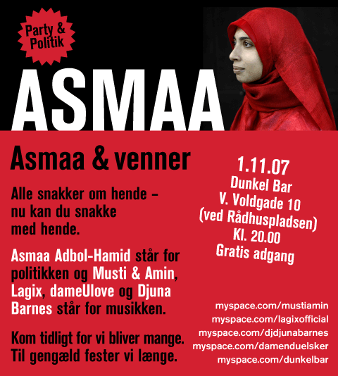

Dennis Agerblad og Asmaa hænger ud på homoklubben Dunkel, Copenhagen.
01/11 - 2007.

Gina Laktrans, Asmaa & Dennis Agerblad.
Photo:
Freddy Hagen

Photo:
Freddy Hagen

Dennis Agerblad ligger med munden åben.
Photo:
Freddy Hagen

Dennis Agerblad & Johanne Schmidt-Nielsen (En af
Enhedslistens mandater i folketinget).
Photo:
Freddy Hagen
